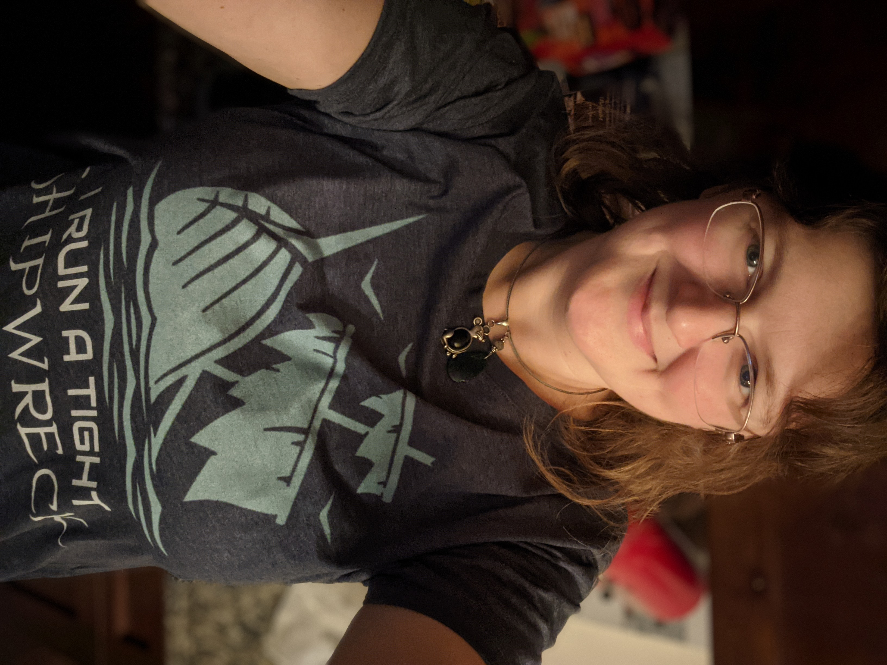

About Me
Background
I was born in Ohio, had several years of moving around the United States with military parents, and moved back to Ohio again in time to graduate high school. I met my future husband when we were set up on a blind date for Homecoming in my junior year of high school. We went to college together at The Ohio State University and got married a week after graduation.

At OSU, I earned 2 BA degrees in History and English, but had no interest in teaching or graduate school. My real passion was writing, and I had a vague dream of being in publishing. Before I could start a career, my new husband's job took us to Washington DC, Germany, then Seattle in a span of 3 years. Just long enough to set my career goals adrift. I began working in retail until I had my first child. Now, with two children ages 6 and 4, it is time for a new chapter.
Current Projects

My full time job is stay-at-home parent. It is the most exhausting job I've ever had, but very rewarding in its own ways. With my youngest set to start Kindergarten in the fall of 2021, it is time to focus on other projects as well.
I am enrolled in a Trilogy curriculum coding boot camp through the University of Washington. One third of the way through, I can already call myself a front end developer. The goal is to be a full stack developer by the end of the course in June. I will be completing several projects throughout, which I will post here. To date, I have covered these major topics:
- HTML
- CSS
- Bootstrap
- Javascript
- jQuery
- DOM traversal and manipulation
- Using client-side local storage
- Browser and third party APIs
- node.js
This page is a project to showcase a responsive portfolio using Bootstrap, but it is also the beginning of my professional portfolio. It was designed to be responsive, and it will continue to become more dynamic. Please visit the portfolio page for screenshots of my projects and links to the deployed application, if available.